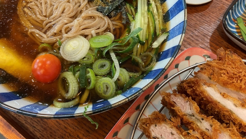
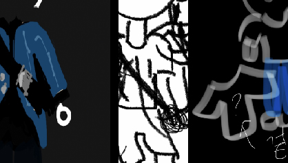
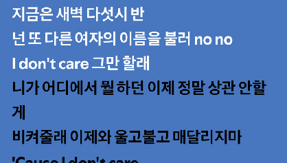

밥 먹기 전 음식 사진 찍기SNS에 올리기 위해 자주 찍다보니 이젠 올리지 않더라도 찍지 않으면 뭔가 아쉬워지곤 합니다. 때문에 습관적으로 음식을 먹기 전 카메라를 들이미는 것 같습니다. 우측 사진의 경우 여름에 어울리는 냉모밀과 돈까스입니다. |
 |
옷 입어보기 전에 그림으로 구상하기처음에는 약속에 나가기 전 여러 옷들을 입어보기 귀찮아서 그림으로 구상하기 시작했습니다. 하지만 한두번 하다보니 이젠 습관으로 자리하여 시간이 지난 지금도 약속이 잡혀 나가야 하면 그 전날에 그림으로 구상을 해봅니다. |
 |
대화 속 단어와 관련 된 노래 부르기비교적 최근에 생긴 습관으로 대화 속 단어가 들어가는 노래를 머리에서 자동으로 떠올립니다. 그러다보니 자연스레 노래를 따라 부르게 되고 살짝 소란스럽다는 단점이 있습니다. 만약 상대가 "그만 할래~" 라고 말했다면 2NE1의 I Don't Care 중 "I don't care 그만 할래" 라는 가사가 떠오르는 것 것과 같은 경우입니다. |
 |